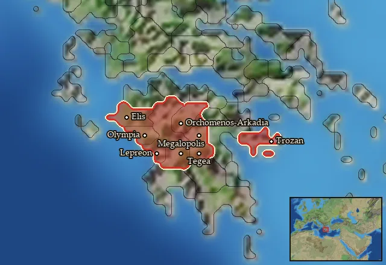

RTR: Imperium Surrectum
RTR: Imperium SurrectumRIS wiki › mercenaries
Arkadia
← all mercenary pools · wiki index
Mercenary pool: 4 units for hire in 8 regions.

Mercenaries
| Unit | Cost (dn) | Experience | At start | Most in pool | Added per turn | Who can hire | |
|---|---|---|---|---|---|---|---|
| Mercenary Achaian Hoplites | 3,390 | 0 | 0 | 1 | 0.1266–0.2532 | Any faction | |
| Mercenary Peloponnesian Hoplites | 4,379 | 2 | 1 | 2 | 0.1508–0.3015 | Any faction | |
| Mercenary Arcadian Peltasts | 2,819 | 0 | 1 | 2 | 0.2342–0.4684 | Any faction | |
| Mercenary Cretan Archers | 5,097 | 2 | 0 | 1 | 0.0648–0.1295 | Any faction |
Regions (8)
Arkadia · Elis · Mantineia · Olygirtos · Pisatis · Tegeatis · Triphylia · Troizen